附加车道

左
右

进入线
通达方向
退出linkID
进入车道序号

公交车道信息
通达方向
退出linkID
进入车道序号
公交车道信息
通达方向
退出linkID
进入车道序号
公交车道信息
通达方向
退出linkID
进入车道序号
公交车道信息
通达方向
退出linkID
进入车道序号
公交车道信息
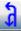
普通
公交
关系类型
关系类型
关系类型
关系类型
关系类型
1
2
3
4

总车道
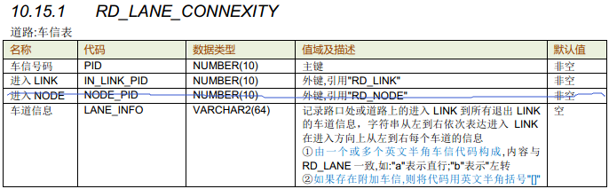
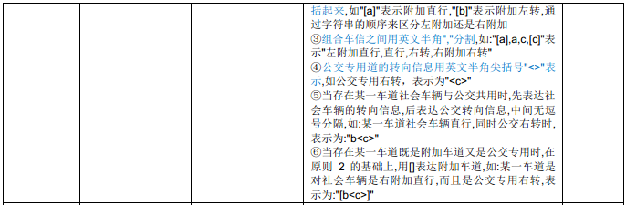
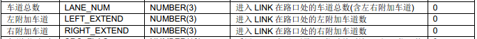
车信号码
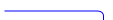

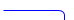
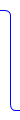
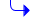
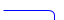
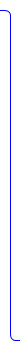
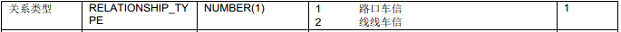
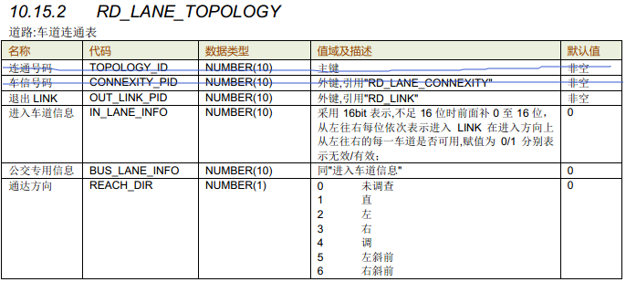
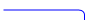
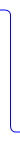
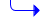
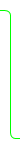


FASTMAP | 道路编辑平台


输出结果

错误检查


现场成果

待处理

已处理
交限（共8条）
共204个

测线（共3条）
< 2 >

种别（共182条）

方向（共5条）

车信（共6条）

参考图层

全部
执行2项操作
操作输出结果
1、新增Link PID（点击PID地图定位到要素）
2、删除LinkPID
3、修改交限PID（点击PID地图定位到要素）


我的任务
退出

北京项目库
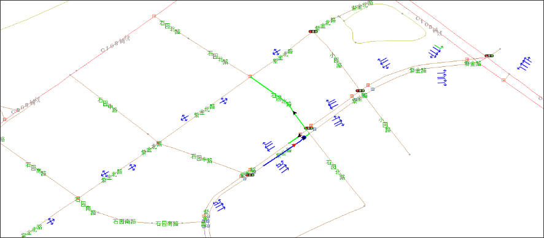


选点
选线
选关系
选Tips
增点
增线
增关系
增点
移点
删点
打断
分离点


车信属性卡片，详见下表说明
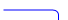
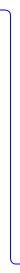
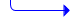
FASTMAP | 道路编辑平台
输出结果
错误检查
现场成果
待处理
已处理
交限（共8条）
共204个
测线（共3条）
< 2 >
种别（共182条）
方向（共5条）
车信（共6条）
参考图层
全部
suiyuxiu
退出
我的数据
北京项目库
选点
选线
选关系
选Tips
增点
增线
增关系
增点
移点
删点
打断
分离点

选定车道信息
（map）
新增关系
选定类型

设定类型为：车信
选中进入线
(map)
实时控制/作业引导
选中进入点
（map）
实时控制/作业引导


新增车信

车信
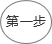
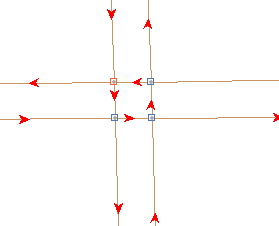
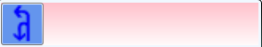
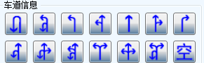
普通
公交
选择进入线、进入点
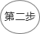
属性栏中选择车道通行方向
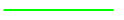
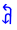
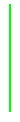
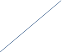
实时控制：
1车信进入线不应该有9级路
2.实时检查：车信退出线不应该有9级路
3.实时检查：“步行街”不可以创建车道信息
4.“十级路”不可以创建车道信息
5.如果车信进入线和退出线（退出线为环岛或者为特殊交通的除外）挂接在同一点上，而且这个点未登记路口（不属于任何路口），则不允许制作和修改
6.相同的进入线、进入点不能创建两组车信；
7.车道信息中，inlink车道数不应为0
8.每个车道信息都应该有退出线与之对应
9.线线车信必须有经过线
10.经过线没有闭合，请完成经过线设置
11.进入Link为单方向且通行方向不能离开路口；
12.退出Link为单方向且通行方向不能进入路口；
13.相同进入线，相同进入点，不同退出线的多组车信，车信号码应该相同；
车道信息输入完成
取消
取消新增
保存/空格
生成数据

第四步
计算直行退出线，有两根
修改退出线
删除程序计算的多余退出线
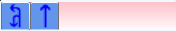
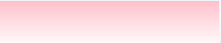
普通
公交
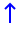
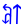
计算第二个直行车信箭头的退出线（相同箭头区分显示）
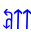
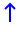
修改该直行箭头的退出线
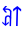
计算右转方向的箭头(右转方向为附加箭头，且右转为公交专用道)
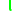
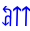
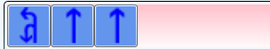
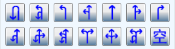
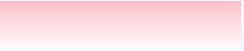
普通
公交

车信显示说明
业务说明：
1.单击车信icon，图面高亮车信进入，经过，退出线信息，车道信息箭头在对应退出线上展示，属性栏显示且可编辑
2.属性栏切换至当前车信属性栏，鼠标点击选择属性栏中车道信息箭头，图面高亮显示当前车道信息箭头对应的进入线，进入点，经过线和退出线以及退出线上的车道信息箭头，同时属性栏中该箭头对应的通达方向高亮显示
3.点击属性栏中的通达方向，属性栏中该通达方向对应的车道信息箭头高亮显示，图面高亮当前选中通达方向对应的车信关系。
操作说明：
1、选中车信icon后，触发车信编辑，右侧显示该车信的属性信息；
2.地图中高亮显示进入线、退出线；车道信息输入框中修改车道信息箭头；
3.支持地图中指定选中车道信息箭头的退出线
4.点击“保存”，保存修改的属性信息；
取消动作：
1、用户要放弃本次操作可按Esc撤销；
2.按取消按钮，可放弃本次更改；
业务要求：
一、选中车信icon，图面高亮该车信的车信关系，车道信息编辑框在图面展示，属性栏展示可编辑，原数据中的车信icon高亮显示，切换不同的车道信息箭头，对应显示其退出线信息；
二.车道信息修改：
1.触发编辑后，车道信息编辑框展示且处于可编辑状态，可修改车道信息：
①.左键单击车道信息列表中的方向箭头，增加普通车道信息箭头；
② 左键单击普通车道中已选中的方向箭头，增加对应车道的公交方向箭头，方向与普通车道的方向相同；
③ 左键双击普通车道中的方向箭头，删除普通车道箭头，如果有对应的公交箭头，一起删除；
④ 左键双击公交车道中的方向箭头，删除公交车道箭头；
⑤ 左键双击车道列表中的方向箭头，增加附加车道箭头，显示在普通车道行；
⑥ 左键拖拽普通车道、公交车道中已有的方向箭头，可以调整车道顺序；
三、.修改车道信息箭头后退出线的维护原则：
①、车信（修改对象）ID不发生变化，进入线、进入点保持不变，重新输入的车道信息替换原车信的车道信息
②、重新输入的车道信息与原车信车道信息箭头不一致，但两者车道信息箭头表达的通达方向一致，若为车道信息箭头增加或变更，则该增加或变更的箭头对应的退出link与原车信与之相同通达方向的退出link保持一致；若为车道信息减少，则将减少的箭头从原车信车道信息中移除，退出Link不发生变更。
③、重新输入的车道信息与原车信车道信息箭头不一致，且两者车道信息箭头表达的通达方向不完全一致，保持一致的通达方向对应的箭头，退出线保持不变；增加的通达方向对应的车道信息箭头，人为制作退出link；减少的通达方向，删除车信该通达方向对应的退出link。
四、根据退出线计算角度方向原则如下：
直行： (angle > 157.5 && angle <= 202.5)；
左转：(angle > 247.5 && angle <= 292.5)；
调头：(angle > 337.5 && angle <= 360.0)；(angle >= 0 && angle <= 22.5)；
右转：(angle > 67.5 && angle < 112.5)；（大陆数据）
程序计算经过线：
①、人为指定退出线后，程序自动计算经过线，系统经过最短路径计算选择经过线；
②、选定经过线后，将经过线红色高亮显示；
③、按p键可进入修改该箭头的经过线，按c键程序重新计算该箭头的经过线，计算结果实时体现在图面。经过线修改方式：
①、点击link即为该箭头增加经过线；
②、点击已选中link即为删除该箭头的此经过线。
五、程序根据进入线和退出线自动判断关系类型，如果进入线和退出线挂接在同一路口上且均不为路口内道路，则关系类型为“路口关系”，其他情况为“线线关系”；
六、如果是路口关系，在对应退出线上系统提示“路口挂接”；
七、如果是线线关系，在对应退出线上系统提示“线线连接”；
八、车道总数、左附加车道和右附加车道不允许修改，程序根据车道信息生成，生成原则如下：
1） 车道信息中选择的车道数=车道总数
2） 车道信息中选择的最左边车道的附加车道总和=左附加车道数
3） 车道信息中选择的最右边的车道附加车道总和=右附加车道数
九、保存之后，整个车信处于选中状态，图面显示车信信息，属性栏处于显示且可编辑状态，数据车信icon更新。
实时控制：
2.实时检查：车信退出线不应该有9级路
5.如果车信进入线和退出线（退出线为环岛或者为特殊交通的除外）挂接在同一点上，而且这个点未登记路口（不属于任何路口），则不允许制作和修改
7.车道信息不能为空
8.每个车道信息都应该有退出线与之对应
9.线线车信必须有经过线
10.经过线没有闭合，请完成经过线设置
12.退出Link为单方向且通行方向不能进入路口；
13.相同进入线，相同进入点，不同退出线的多组车信，车信号码应该相同；
关系类型编辑
附加车道编辑
附加车道
左
右
路口关系
线线关系
关系类型

路口关系
属性栏编辑字段

操作说明：
1.鼠标左键点击附加车道属性框，进入收费标准编辑场景，输入对应的计费标准值

操作说明：
1.鼠标左键点击关系类型属性框，弹出可选择列表
2.高亮显示当前鼠标箭头所在的条目
3.鼠标左键点击需要选中的条目,选择列表收起，完成属性栏中值的修改
4.鼠标左键点击非选择列表区域，列表收起，退出编辑
5.按Esc键，列表收起，退出编辑
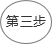
操作说明：
1、点击新增关系按钮
2、选择类型为“车信”，界面自动切换为“路口处关系”场景
3、map界面提示用户选择“进入线”，左键点击对象Link 作为进入线；
4、map界面以绿色加粗高亮显示该Link，并红色高亮进入link的端点，同时提示用户选择“进入点”；
5、用户点击选择进入线的某一个端点作为“进入点”，同时map界面右上角弹出车道信息输入窗口；
6、左键点击选择对应的车信箭头，箭头输入完成，地图上选择退出线；
7、重复6操作，操作完成后保存；
6.左键点击选择对应的车信箭头，箭头输入完成，空格保存，
7、界面高亮车信进入，经过，退出线，以及退出线上显示对应的箭头信息,车信处于选中可编辑状态；
取消动作：
1、保存前，点击其他工具按钮，结束当前操作，切换至其他动作；
2、ESC可退出当前编辑
3、点击属性栏下方取消按钮，结束当前操作，不生成数据
业务要求：
1、进入创建车信场景，默认开启线捕捉功能，系统根据鼠标移动捕捉最近的线；
2、进入点选取：
①、如果进入线是单方向道路，则自动选取link通行方向的第一个路口点，作为进入点，计算路径中最靠近路口的线作为进入线，图面右上角弹出车信箭头输入窗口。
②、如果进入线为 双方向道路，则人为指定更靠近车信作用路口的图面来定义车信进入方向，程序选取link该方向第一个路口点作为进入点，计算路径中最靠近路口的线作为进入线 ，图面右上角弹出车信箭头输入窗口。
3.车道信息选择：
①.左键点击箭头即代表选中，点击车道信息列表中的箭头默认为普通车道信息箭头，按ctrl再点击选择箭头，该箭头代表附加车信；双击普通车道信息箭头对应的公交车道箭头的车道，则生成与该普通车道信息箭头相同方向的公交车专用道箭头；点击普通车道信息箭头对应的公交车道箭头的车道，再点击选择车道信息箭头，则在该车道生成对应方向的公交车专用道箭头；
②.选中已选择车信箭头，可实现移除和改变顺序：
①、点击已选中箭头，可左右拖动改变箭头顺序；
②、点击选中已选择箭头，拖出车道信息框外，即为删除该车道信息箭头，
③、普通 车道选择车道信息箭头之后，公交专用道对应显示车道
4、退出线计算：
①、计算原则：
选择箭头即代表选择对应的通达方向，通达方向及对应角度范围如下：
直行： (angle > 157.5 && angle <= 202.5)；
左转：(angle > 247.5 && angle <= 292.5)；
调头：(angle > 337.5 && angle <= 360.0)；(angle >= 0 && angle <= 22.5)；
右转：(angle > 67.5 && angle < 112.5)；（大陆数据）
程序根据箭头代表的通达方向根据以上对应角度计算退出线，若某一箭头方向在角度范围内寻找到多条与进入link挂接同一路口的退出link，程序选择退出线与进入线夹角中与南北，东西方向夹角最小的一条作为退出线；若某一个箭头方向在角度范围内未找到与进入link挂接同一路口的退出link，则程序报出提示:"未计算出退出link，请人工指定退出线"；
2、程序未计算出退出线，人为指定退出线：
②、退出线上只显示当前选中车信箭头的箭头信息
③、进入线右侧按照选择顺序依次累加显示车信箭头
程序未计算出退出线，人为指定退出线：
①、常规箭头：点击车道信息编辑框中对应的箭头之后，光标回到地图界面，默认可指定当前箭头对应的退出线 ；
②、组合箭头：点击车道信息编辑框中对应的箭头之后，组合箭头对应的通达方向扩展显示 ，点击通达方向，光标回到地图界面，默认可指定当前通达方向对应的退出线 ；
3、程序计算经过线：
①、人为指定退出线后，程序自动计算经过线，系统经过最短路径计算选择经过线；
②、选定经过线后，将经过线红色高亮显示；
③、按p键可进入修改该箭头的经过线，按c键程序重新计算该箭头的经过线，计算结果实时体现在图面。经过线修改方式：
①、点击link即为该箭头增加经过线；
②、点击已选中link即为删除该箭头的此经过线。
5.退出线的确认和修改：
1、修改程序计算结果：
①、常规箭头：选择对应的箭头之后，程序计算该箭头的退出线并高亮体现在图面上，同时该箭头在进入道路右侧显示，退出线上也显示该箭头且高亮闪动，光标回到地图界面，默认可修改当前箭头对应的退出线：
②、组合箭头：选择对应的箭头之后，程序计算该箭头的退出线并高亮体现在图面上，同时该箭头在进入道路右侧显示，退出线上组合箭头高亮显示（不闪动，未进入编辑场景），对应的通达方向也显示，点击已选中的组合箭头，扩展显示该箭头对应的通达方向，点击扩展显示的通达方向，图面只显示当前通达方向对应的退出线，此时，退出线上的箭头高亮闪动，焦点回到图面默认可编辑当前通达方向对应的退出线；退出线更改方法：
①.左键点击link即为该箭头增加退出线；
②点击已选中link即为删除该箭头的此退出线
6、程序根据进入线和退出线自动判断关系类型，如果进入线和退出线挂接在同一路口上且均不为路口内道路，则关系类型为“路口关系”，其他情况为“线线关系”；
7、如果是路口关系，在对应退出线上系统提示“路口挂接”；
8、如果是线线关系，在对应退出线上系统提示“线线连接”；
9、车道总数、左附加车道和右附加车道不允许修改，程序根据车道信息生成，生成原则如下：
1） 车道信息中选择的车道数=车道总数
2） 车道信息中选择的最左边车道的附加车道总和=左附加车道数
3） 车道信息中选择的最右边的车道附加车道总和=右附加车道数
10、保存之后车信处于被选中状态，进入线，进入点和退出线高亮显示，退出线上显示对应的车道信息箭头，同时该车信的属性栏展示且可编辑，
11、模型各字段赋值原则：
①、进入车道信息：根据车道信息录入的顺序从左往右计算，该车信的进入link到该条退出link可通行的车道表达为“1”，其余不可通行的车道表达为“0”；
②、公交专用道：根据车道信息录入的顺序从左往右计算，该车信的进入link到该条退出link可通行的车道表达为“1”，其余不可通行的车道表达为“0”；
③、通达方向：该退出线对应的车道信息箭头所代表的方向，即为该link对应的通达方向